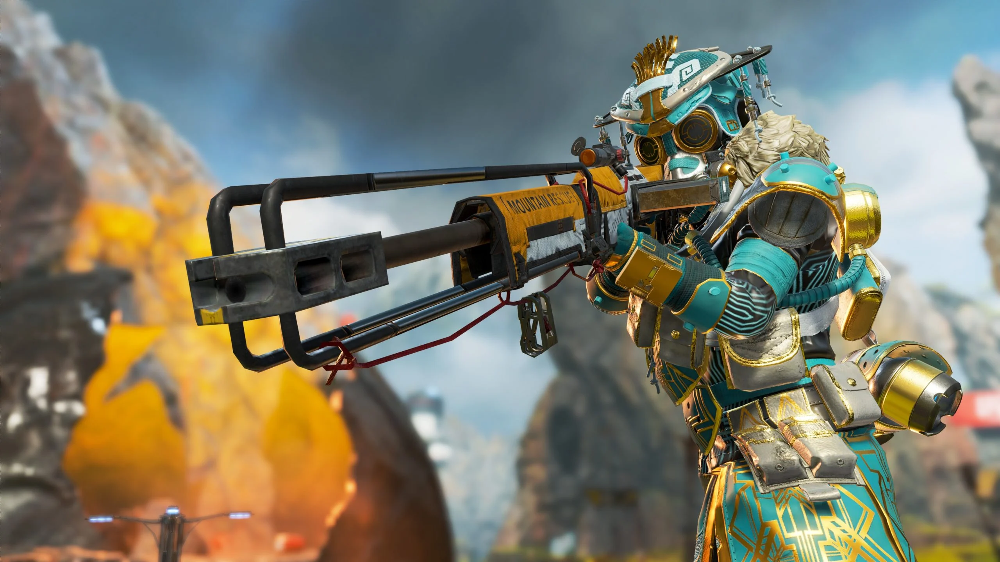

PUBG is a player versus player shooter game in which up to one hundred players fight in a battle royale, a type of large-scale last man standing deathmatch where players fight to remain the last alive. Players can choose to enter the match solo, duo, or with a small team of up to four people.
In Fortnite, players collaborate to survive in an open-world environment, by battling other characters who are controlled either by the game itself or by other players. The single-player or co-operative (played with friends) mode, called 'Save the World', involves fighting off zombie-like creatures.
Roblox is a global platform where millions of people gather together every day to imagine, create, and share experiences with each other in immersive, user-generated 3D worlds. The types of gameplay on Roblox are just as limitless as the imagination of the creators themselves.
Minecraft is a 3-D computer game where players can build anything. The game which has been described as like an 'online Lego' involves building blocks and creating structures across different environments and terrains. Set in a virtual world the game involves resource gathering, crafting items, building, and combat.
League of Legends is one of the world's most popular video games, developed by Riot Games. It features a team-based competitive game mode based on strategy and outplaying opponents. Players work with their team to break the enemy Nexus before the enemy team breaks theirs
Apex Legends is a character-driven, squad-based Battle Royale shooter1. It is a free-to-play hero shooter game where legendary competitors fight together for glory and fortune2. Unlike Fortnite, the game invites the player to survive not alone, but in a squad of three or two people, itself opposed to nineteen others or twice as many in duo
Genshin Impact is an open-world action role-playing game12developed and published by Chinese studio, miHoYo2. The game allows the player to control one of four interchangeable characters in a party, and switching between characters can be done quickly during combat, allowing the player to use several different combinations of skills and attacks
Call of Duty: Warzone 2.0 is a free-to-play battle royale video game developed by Infinity Ward and Raven Software for PlayStation 4, PlayStation 5, Windows, Xbox One, and Xbox Series X/S. It is a sequel to 2020's Call of Duty: Warzone. The game is a part of 2022's Call of Duty: Modern Warfare II and 2023's Call of Duty: Modern Warfare III, but does not require purchase of any of the parent titles. It was introduced during Season 1 of Modern Warfare II content. The game features cross-platform play and a new extraction mode titled DMZ.
Counter-Strike is a series of multiplayer tactical first-person shooter video games12345that pits teams of terrorists and counter-terrorists against each other in various scenarios1345. The game was originally developed as a mod of Half-Life by Minh "Gooseman" Le and Jess Cliffe in 1999, before Valve acquired the rights and hired them too. Counter-Strike is one of the most popular and influential online shooting games of all time.
Valorant is a team-based first-person tactical hero shooter set in the near future. Players play as one of a set of Agents, characters based on several countries and cultures around the world. In the main game mode, players are assigned to either the attacking or defending team with each team having five players on it. Agents have unique abilities, each requiring charges, as well as a unique ultimate ability that requires charging through kills, deaths, orbs, or objectives. Every player starts each round with a "classic" pistol and one or more "signature ability" charges. Other weapons and ability charges can be purchased using an in-game economic system that awards money based on the outcome of the previous round, any kills the player is responsible for, and any objectives completed.